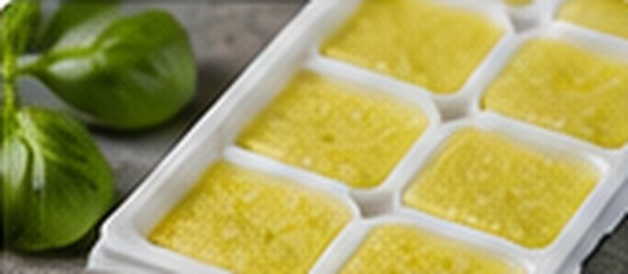

Thai Lemongrass Freezer Paste
Thai · Freezing · Approx. 25 minutes

Ingredients
- 6 lemongrass stalks, tender lower 4–6 inches only
- 6 garlic cloves
- 2 tbsp finely chopped ginger
- ½ cup loosely packed Thai basil leaves
- 2 tbsp neutral oil or water, as needed for blending
Directions
- Trim tough lemongrass tops and root ends; peel away dry outer layers. Thinly slice the tender cores crosswise.
- Pulse lemongrass, garlic, ginger and Thai basil in a food processor until very finely minced.
- Add only enough water or oil to help the mixture blend into a coarse paste.
- Immediately divide into tablespoon-size portions in a silicone tray or small freezer containers.
- Freeze promptly, then transfer solid portions to a labeled freezer bag. Add directly to curries, stir-fries or marinades while cooking.
Notes & serving ideas
A fast starter for panang curry, Thai basil chicken and coconut soups. Keep frozen; never store garlic-in-oil paste at room temperature. Use within 2–3 months for best flavor.